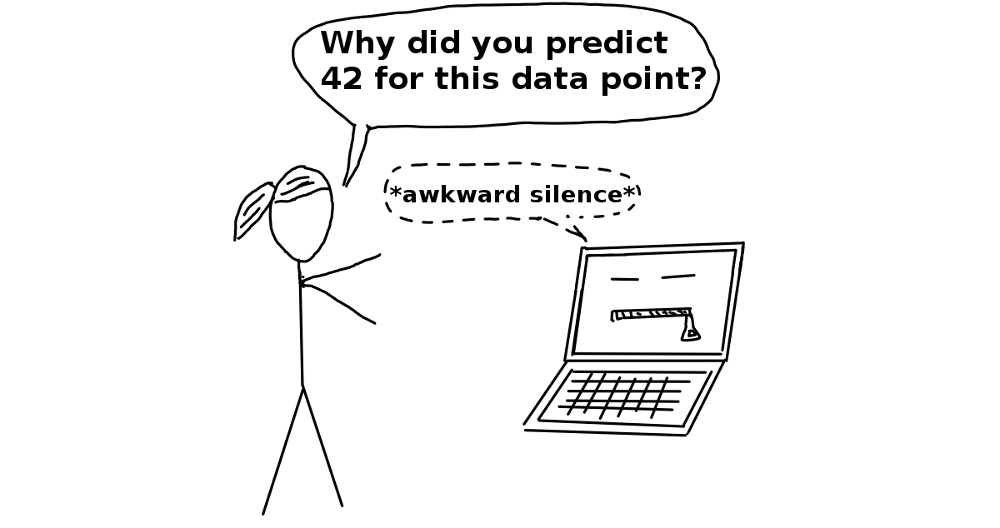

1.3 Terminología
Para evitar confusiones debido a la ambigüedad, aquí hay algunas definiciones de los términos utilizados en este libro:
Un Algoritmo es un conjunto de reglas que una máquina sigue para lograr un objetivo particular2. Un algoritmo puede considerarse como una receta que define las entradas, la salida y todos los pasos necesarios para pasar de las entradas a la salida. Las recetas de cocción son algoritmos en los que los ingredientes son las entradas, la comida cocida es la salida y los pasos de preparación y cocción son las instrucciones del algoritmo.
Aprendizaje automático es un conjunto de métodos que permiten a las computadoras aprender de los datos para hacer y mejorar predicciones (por ejemplo, cáncer, ventas semanales, incumplimiento de crédito). El aprendizaje automático es un cambio de paradigma de la “programación normal”, donde todas las instrucciones se deben dar explícitamente a la computadora a la “programación indirecta” que se realiza mediante el suministro de datos.

Un Aprendiz o Algoritmo de aprendizaje automático es el programa utilizado para aprender un modelo de aprendizaje automático a partir de datos. Otro nombre es “inductor” (por ejemplo, “inductor de árbol”).
Un Modelo de aprendizaje automático es el programa aprendido que asigna entradas a predicciones. Esto puede ser un conjunto de pesos para un modelo lineal o para una red neuronal. Otros nombres para la palabra bastante inespecífica “modelo” son “predictor” o, según la tarea, “clasificador” o “modelo de regresión”. En las fórmulas, el modelo de aprendizaje automático entrenado se llama \(\hat{f}\) o \(\hat{f}(x)\).

FIGURE 1.1: A learner learns a model from labeled training data. The model is used to make predictions.
Un Modelo de caja negra es un sistema que no revela sus mecanismos internos. En el aprendizaje automático, la “caja negra” describe modelos que no se pueden entender al observar sus parámetros (por ejemplo, una red neuronal). El opuesto de una caja negra a veces se denomina caja blanca, y es llamada en este libro como modelo interpretable. Los métodos modelo-agnósticos para la interpretabilidad tratan los modelos de aprendizaje automático como cajas negras, incluso si no lo son.

Aprendizaje automático interpretable se refiere a métodos y modelos que hacen que el comportamiento y las predicciones de los sistemas de aprendizaje automático sean comprensibles para los humanos.
Un conjunto de datos es una tabla con los datos de los cuales la máquina aprende. El conjunto de datos contiene las características y el objetivo a predecir. Cuando se usa para el aprendizaje de un modelo, el conjunto de datos se denomina datos de entrenamiento.
Una observación es una fila en el conjunto de datos. Otros nombres para ‘observación’ son: punto (datos), ejemplo, instancia. Una instancia consta de los valores de característica \(x^{(i)}\) y, si se conoce, el resultado objetivo \(y_i\).
Las características son las entradas utilizadas para la predicción o clasificación. Una característica es una columna en el conjunto de datos. A lo largo del libro, se supone que las características son interpretables, lo que significa que es fácil entender lo que significan, como la temperatura en un día determinado o la altura de una persona. La interpretabilidad de las características es una gran suposición, pero si es difícil entender las características de entrada, es aún más difícil entender lo que hace el modelo. La matriz con todas las características se llama X y \(x^{(i)}\) para instancia individual. El vector de una sola característica para todas las instancias es \(x_j\) y el valor para la característica j y la instancia i es \(x^{(i)}_j\).
El Objetivo (o target) es la columna que la máquina aprende a predecir. En las fórmulas matemáticas, el objetivo generalmente se llama y o \(y_i\) para una sola instancia.
Una Tarea de aprendizaje automático es la combinación de un conjunto de datos con características y un objetivo. Dependiendo del tipo de objetivo, la tarea puede ser, por ejemplo, clasificación, regresión, análisis de supervivencia, agrupamiento o detección de valores atípicos.
La Predicción es el valor que el modelo de aprendizaje automático pronostica, en función de las características dadas. En este libro, la predicción del modelo se denota por \(\hat{f}(x^{(i)})\) o \(\hat{y}\).
{r, message = FALSE, warning = FALSE, echo = FALSE} devtools::load_all()
“Definición de algoritmo”. https://www.merriam-webster.com/dictionary/algorithm. (2017)↩